9.4 JAGS - Two Latent Variable
# model code
jags.model.cfa2 <- function(){
###################
# Specify the factor analysis measurement model for the observables
####################
for (i in 1:n){
# expected value for each examinee for each observable
mu[i,1] <- tau[1] + lambda[1,1]*ksi[i,1]
mu[i,2] <- tau[2] + lambda[2,1]*ksi[i,1]
mu[i,3] <- tau[3] + lambda[3,1]*ksi[i,1]
mu[i,4] <- tau[4] + lambda[4,2]*ksi[i,2]
mu[i,5] <- tau[5] + lambda[5,2]*ksi[i,2]
for(j in 1:J){
x[i,j] ~ dnorm(mu[i,j], inv.psi[j]) # distribution for each observable
}
}
######################################################################
# Specify the (prior) distribution for the latent variables
######################################################################
for (i in 1:n){
ksi[i, 1:M] ~ dmnorm(kappa[], inv.phi[,]) # distribution for the latent variables
}
######################################################################
# Specify the prior distribution for the parameters that govern the latent variables
######################################################################
for(m in 1:M){
kappa[m] <- 0 # Means of latent variables
}
inv.phi[1:M,1:M] ~ dwish(dxphi.0[ , ], d); # prior for precision matrix for the latent variables
phi[1:M,1:M] <- inverse(inv.phi[ , ]); # the covariance matrix for the latent vars
phi.0[1,1] <- 1;
phi.0[1,2] <- .3;
phi.0[2,1] <- .3;
phi.0[2,2] <- 1;
d <- 2;
for (m in 1:M){
for (mm in 1:M){
dxphi.0[m,mm] <- d*phi.0[m,mm];
}
}
######################################################################
# Specify the prior distribution for the measurement model parameters
######################################################################
for(j in 1:J){
tau[j] ~ dnorm(3, .1) # Intercepts for observables
inv.psi[j] ~ dgamma(5, 10) # Precisions for observables
psi[j] <- 1/inv.psi[j] # Variances for observables
}
lambda[1,1] <- 1.0 # loading fixed to 1.0
lambda[4,2] <- 1.0 # loading fixed to 1.0
for (j in 2:3){
lambda[j,1] ~ dnorm(1, .1) # prior distribution for the remaining loadings
}
lambda[5,2] ~ dnorm(1, .1) # prior distribution for the remaining loadings
}
# data must be in a list
dat <- read.table("code/CFA-One-Latent-Variable/Data/IIS.dat", header=T)
mydata <- list(
n = 500, J = 5, M =2,
x = as.matrix(dat)
)
# initial values
start_values <- list(
list("tau"=c(1.00E-01, 1.00E-01, 1.00E-01, 1.00E-01, 1.00E-01),
lambda= structure(
.Data= c( NA, 2.00E+00, 2.00E+00, NA, NA,
NA, NA, NA, NA, 2.00E+00),
.Dim=c(5, 2)),
inv.phi= structure(
.Data= c(1.00E+00, 0.00E+00, 0.00E+00, 1.00E+00),
.Dim=c(2, 2)),
inv.psi=c(1.00E+00, 1.00E+00, 1.00E+00, 1.00E+00, 1.00E+00)),
list(tau=c(3.00E+00, 3.00E+00, 3.00E+00, 3.00E+00, 3.00E+00),
lambda= structure(
.Data= c( NA, 5.00E-01, 5.00E-01, NA, NA,
NA, NA, NA, NA, 5.00E-01),
.Dim=c(5, 2)),
inv.phi= structure(
.Data= c(1.33E+00, -6.67E-01, -6.67E-01, 1.33E+00),
.Dim=c(2, 2)),
inv.psi=c(2.00E+00, 2.00E+00, 2.00E+00, 2.00E+00, 2.00E+00))
,
list(tau=c(5.00E+00, 5.00E+00, 5.00E+00, 5.00E+00, 5.00E+00),
lambda= structure(
.Data= c( NA, 1.00E+00, 1.00E+00, NA, NA,
NA, NA, NA, NA, 1.00E+00),
.Dim=c(5, 2)),
inv.phi= structure(
.Data= c(1.96E+00, -1.37E+00, -1.37E+00, 1.96E+00),
.Dim=c(2, 2)),
inv.psi=c(5.00E-01, 5.00E-01, 5.00E-01, 5.00E-01, 5.00E-01))
)
# vector of all parameters to save
# exclude fixed lambda since it throws an error in
# in the GRB plot
param_save <- c("tau", "lambda[2,1]","lambda[3,1]","lambda[5,2]", "phi", "psi")
# fit model
fit <- jags(
model.file=jags.model.cfa2,
data=mydata,
inits=start_values,
parameters.to.save = param_save,
n.iter=5000,
n.burnin = 2500,
n.chains = 3,
n.thin=1,
progress.bar = "none")## Compiling model graph
## Resolving undeclared variables
## Allocating nodes
## Graph information:
## Observed stochastic nodes: 2500
## Unobserved stochastic nodes: 514
## Total graph size: 9035
##
## Initializing model## Inference for Bugs model at "C:/Users/noahp/AppData/Local/Temp/Rtmpk3BvWg/modela6053bd77dc.txt", fit using jags,
## 3 chains, each with 5000 iterations (first 2500 discarded)
## n.sims = 7500 iterations saved
## mu.vect sd.vect 2.5% 25% 50% 75% 97.5% Rhat n.eff
## lambda[2,1] 0.782 0.125 0.677 0.738 0.771 0.807 0.892 1.057 7500
## lambda[3,1] 0.467 0.093 0.384 0.433 0.460 0.488 0.550 1.018 2900
## lambda[5,2] 0.928 0.160 0.815 0.878 0.913 0.952 1.044 1.003 1500
## phi[1,1] 0.380 0.052 0.295 0.353 0.381 0.411 0.471 1.001 7500
## phi[2,1] 0.375 0.047 0.304 0.351 0.376 0.401 0.452 1.001 7500
## phi[1,2] 0.375 0.047 0.304 0.351 0.376 0.401 0.452 1.001 7500
## phi[2,2] 0.494 0.065 0.393 0.462 0.496 0.532 0.604 1.001 3100
## psi[1] 0.367 0.034 0.312 0.345 0.364 0.385 0.432 1.001 7500
## psi[2] 0.173 0.181 0.145 0.160 0.169 0.179 0.200 1.016 5800
## psi[3] 0.174 0.236 0.148 0.162 0.170 0.178 0.195 1.040 7500
## psi[4] 0.342 0.118 0.283 0.318 0.337 0.359 0.407 1.005 1000
## psi[5] 0.246 0.173 0.203 0.228 0.242 0.258 0.289 1.009 7500
## tau[1] 3.333 0.038 3.256 3.307 3.333 3.359 3.409 1.001 6700
## tau[2] 3.897 0.028 3.842 3.878 3.897 3.916 3.954 1.001 4000
## tau[3] 4.596 0.023 4.550 4.580 4.596 4.611 4.640 1.001 7500
## tau[4] 3.034 0.041 2.952 3.007 3.034 3.061 3.115 1.001 4300
## tau[5] 3.713 0.036 3.643 3.688 3.713 3.738 3.784 1.001 7500
## deviance 3186.540 132.995 3066.830 3140.418 3181.096 3220.596 3301.618 1.006 1400
##
## For each parameter, n.eff is a crude measure of effective sample size,
## and Rhat is the potential scale reduction factor (at convergence, Rhat=1).
##
## DIC info (using the rule, pD = var(deviance)/2)
## pD = 8840.3 and DIC = 12026.8
## DIC is an estimate of expected predictive error (lower deviance is better).
 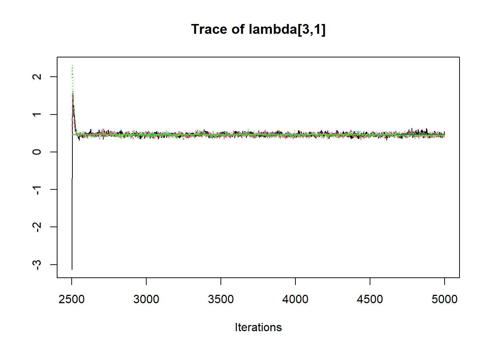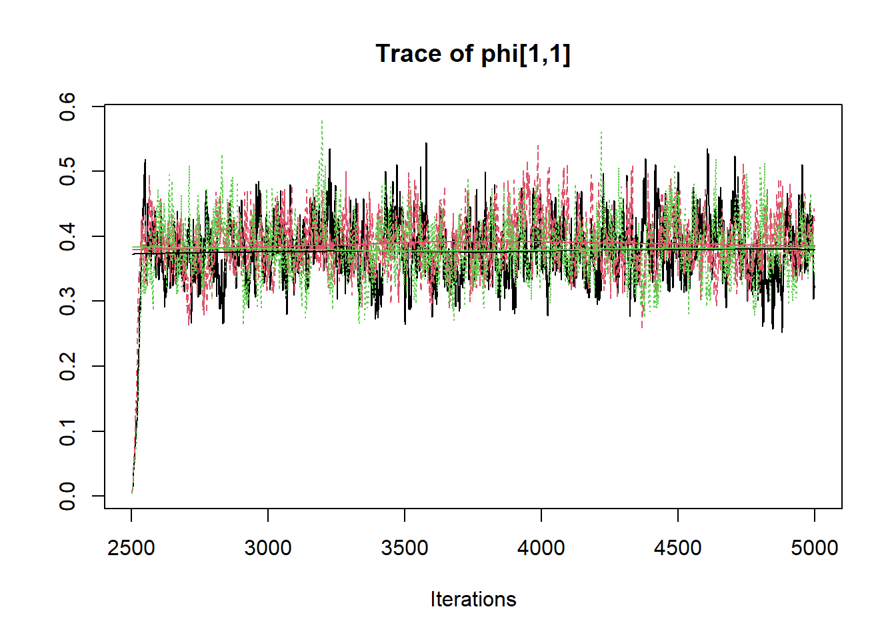
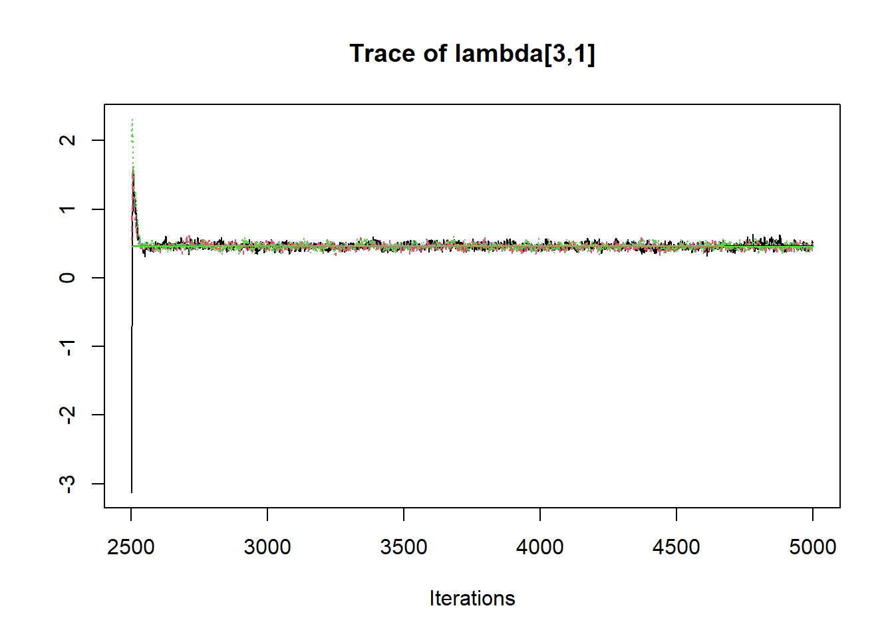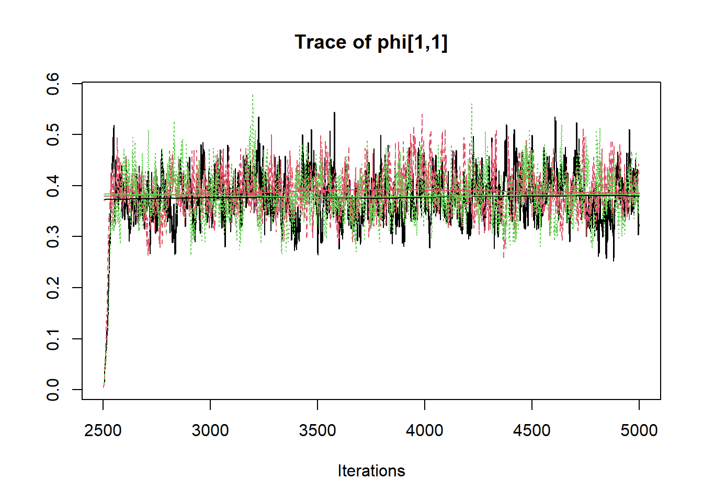 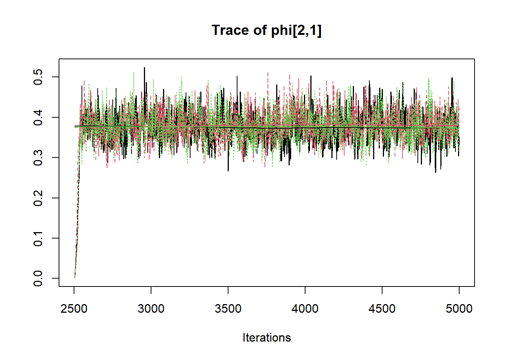
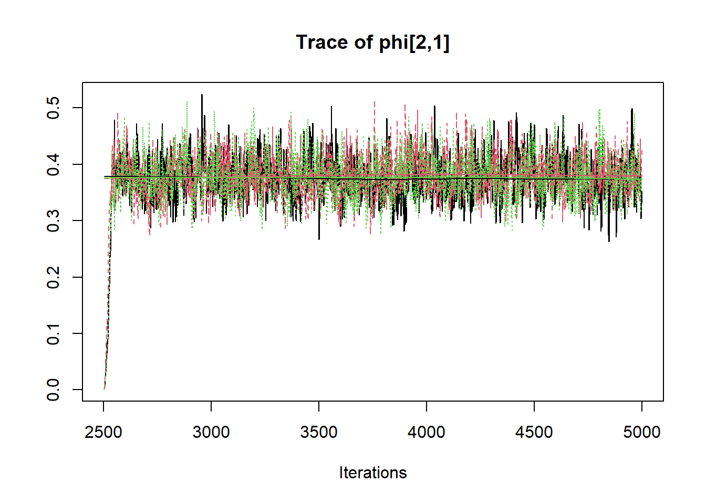

 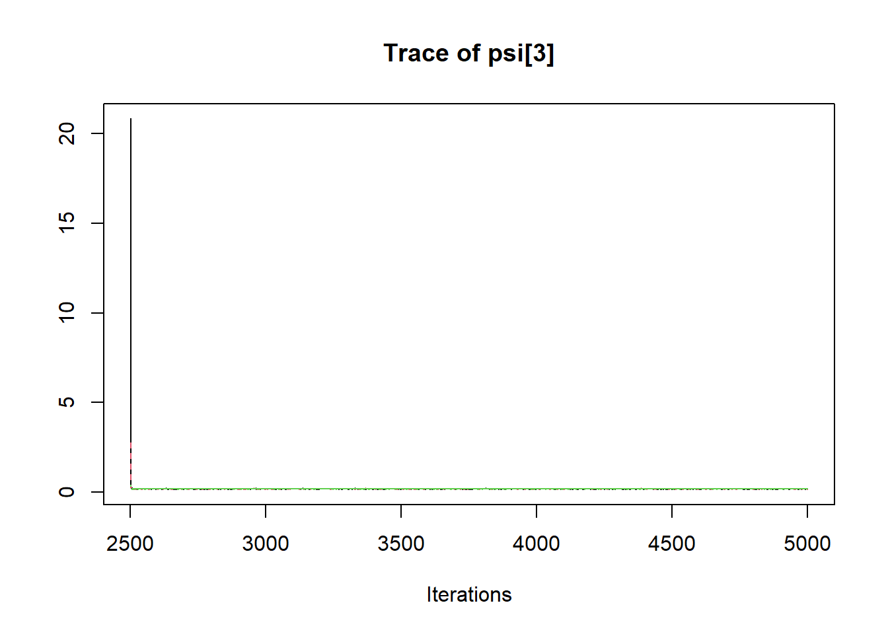
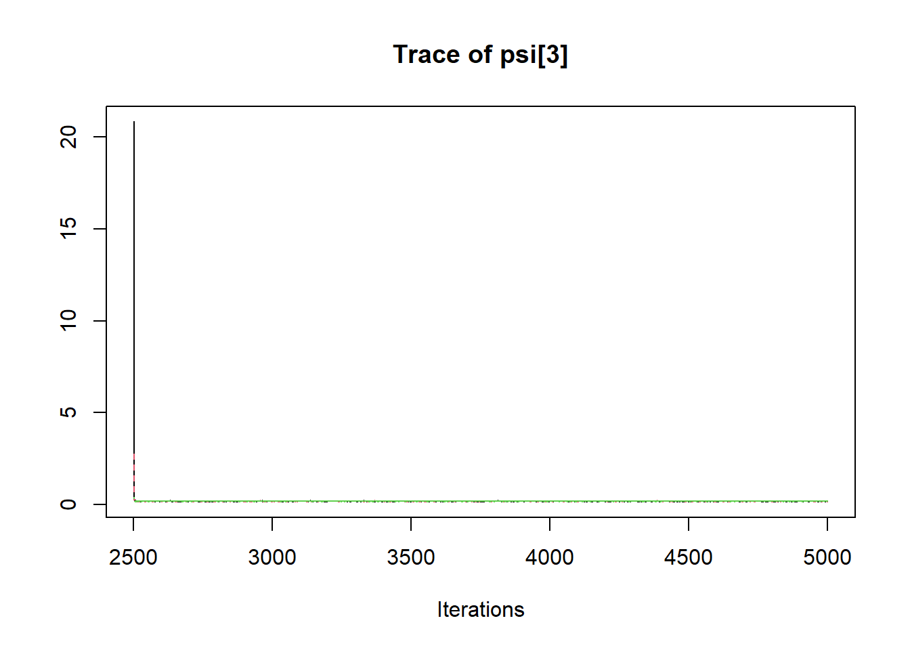


 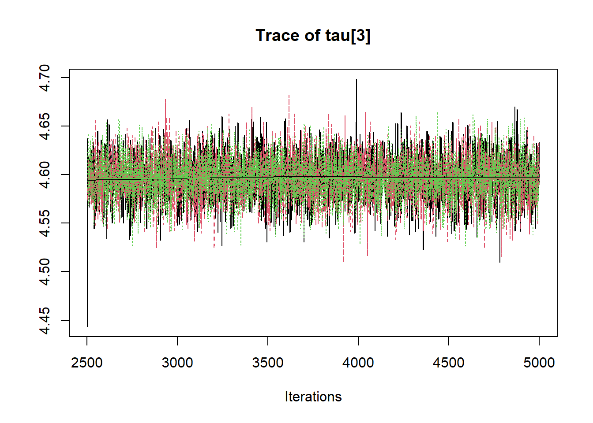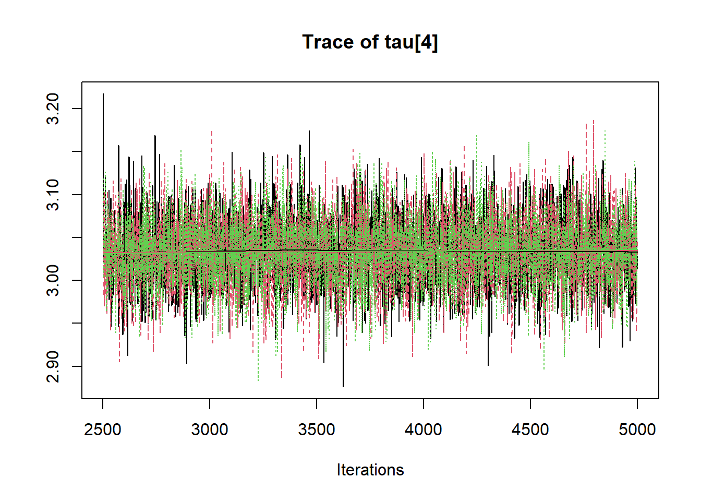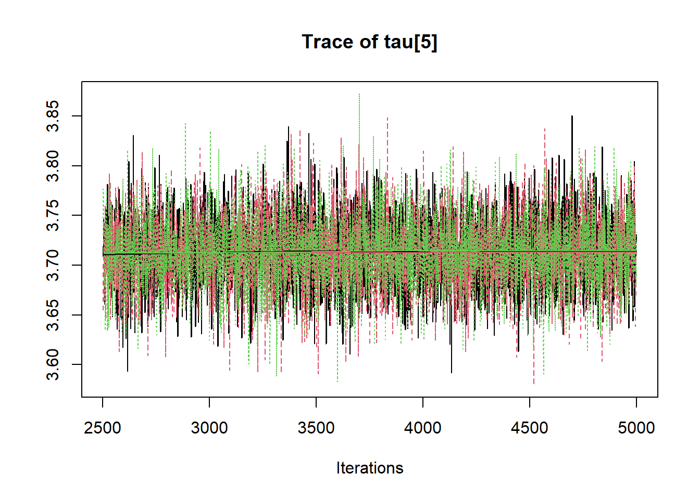
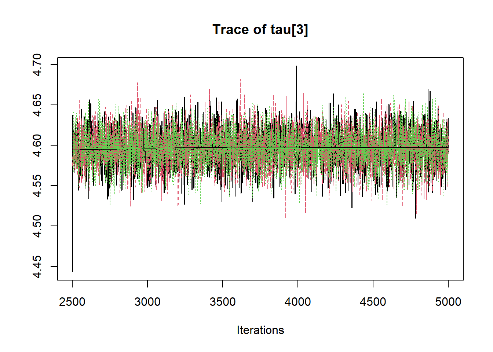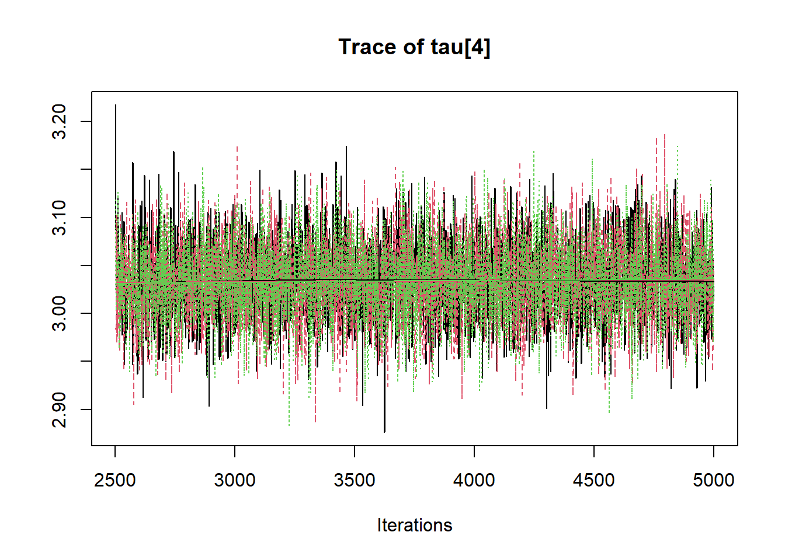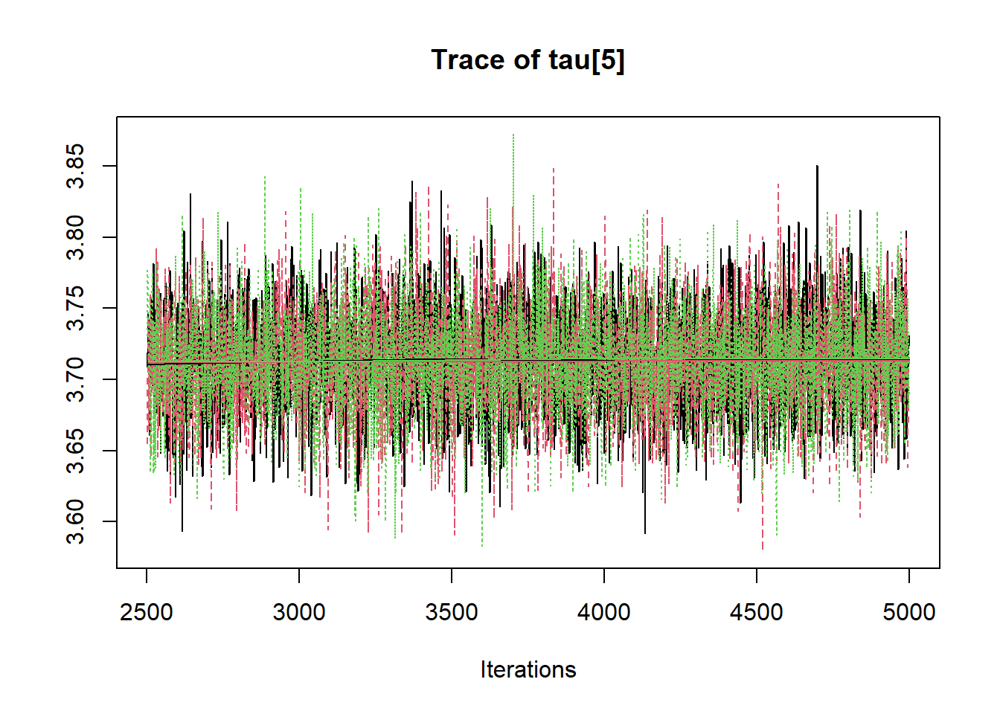
# convert to single data.frame for density plot
a <- colnames(as.data.frame(jags.mcmc[[1]]))
plot.data <- data.frame(as.matrix(jags.mcmc, chains=T, iters = T))
colnames(plot.data) <- c("chain", "iter", a)
plot_title <- ggtitle("Posterior distributions",
"with medians and 80% intervals")
mcmc_areas(
plot.data,
pars = c(paste0("tau[",1:5,"]")),
prob = 0.8) +
plot_title
mcmc_areas(
plot.data,
pars = c("lambda[2,1]","lambda[3,1]","lambda[5,2]"),
prob = 0.8) +
plot_title
## Error: Some 'pars' don't match parameter names: phi FALSE